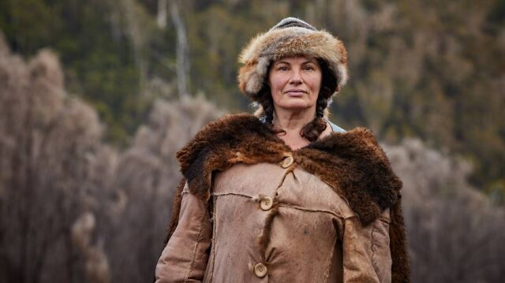
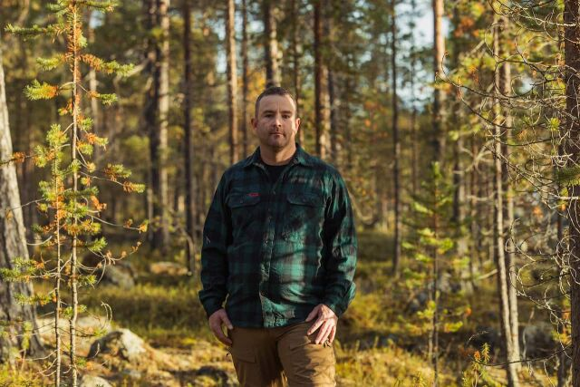

All seasons
Alone Australia
4 seasons · 40 survivalists · 43 episodes · 1,268 days survived between them
4Seasons
40Survivalists
76daysLongest stayShay Williamson, S3
64.8daysAverage winning time
20%Medically evacuated8 survivalists
1Female winnersof 4 winners
Every season
Select a season for the full results, survivalist profiles, loadouts and episode guide.
| Season | Subtitle & location | Winner | Winning days | Avg days | Med-evacs | Episodes | Avg IMDb |
|---|---|---|---|---|---|---|---|
| Season 1 | lutruwita / Tasmania, Australia |  Gina Chick | 67 | 21.5 | 2 | 11 | 7.8 |
| Season 2 | South Island, New Zealand | Krzysztof Wojtkowski | 64 | 31.5 | 1 | 10 | 7.1 |
| Season 3 | lutruwita / Tasmania, Australia |  Shay Williamson Shay Williamson | 76 | 42.4 | 3 | 12 | 7.9 |
| Season 4 | Sapmi, Lapland, Finland |  Trent Fenton | 52 | 31.4 | 2 | 10 | 7.1 |


Most popular loadout items
Each survivalist picks ten items to take into the wilderness.
Loadout data is only available for 1 Alone Australia survivalist so far — not enough for a meaningful summary.